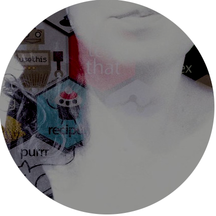
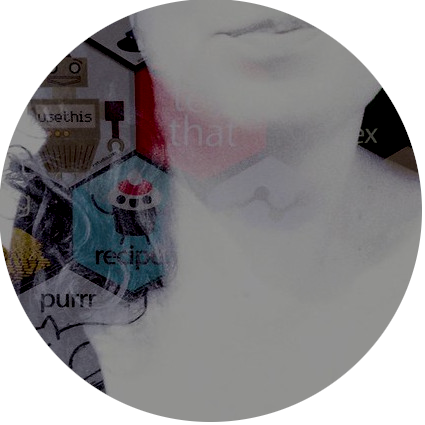

Projects
Research topics
Being employed as an academic, some proportion of my projects are research related. My research projects can be grouped into two broad categories. First, as a cognitive scientist, I am interested in how people acquire new knowledge and reason about the world; and as a mathematical psychologist my approach to studying this is to employ a mix of computational modelling and experimental work. The second broad topic I write about is methodological. What is the relationship between scientific and statistical inferences? How should researchers choose between competing theoretical models? I spend quite a lot of my time thinking about these questions. A few recent papers that I really like:
- Navarro, D. J. (2019). Between the devil and the deep blue sea: Tensions between scientific judgement and statistical model selection. Computational Brain and Behavior, 2, 28-34
- Navarro, D. J. and Kemp, C. (2017). None of the above: A Bayesian account of the detection of novel categories. Psychological Review, 124, 643-677
- Tauber, S., Navarro, D. J., Perfors A. and Steyvers, M. (2017). Bayesian models of cognition revisited: Setting optimality aside and letting data drive psychological theory. Psychological Review, 124, 410-441.
R packages
Writing R packages is one of my favourite activities, and I have several packages at varying stages of development. Some packages are closely tied to my work: for instance, the jaysire package provides a method for writing behavioural experiments within R that can run through a web browser. Others are general purpose tools that I find convenient, such as workbch and slumdown. The others – rainbowr, asciify and jasmines – are just for fun!
Packages without hex stickers: scrawl, flametree
Technical documentation and tutorials
One of my joys in life is writing tutorial articles and technical documentation for open source projects. In addition to writing the somewhat successful learning statistics with R textbook, I’ve contributed a lot of writing to the 3rd edition of Hadley Wickham’s ggplot2 book (my commits are here), and started contributing to the tidyverse by implementing documentation fixes (e.g. to dplyr::filter). I’ve discovered that I really enjoy this kind of work and am always on the look out for new opportunities in this area.
R-Ladies Sydney
R-Ladies is a worldwide organisation that promotes gender diversity within the R community. The organisation is explicitly LGBTIQ friendly and trans-inclusive, and aims to provide support in across the entire spectrum of roles whether as leaders, package developers, conference speakers, conference participants, educators, or users. In collaboration with Jen Richmond, Lisa Williams, Steph Stammel I helped to co-found the Sydney R-Ladies chapter in 2018, and it’s been one of the most rewarding professional activities I’ve ever been involved in.